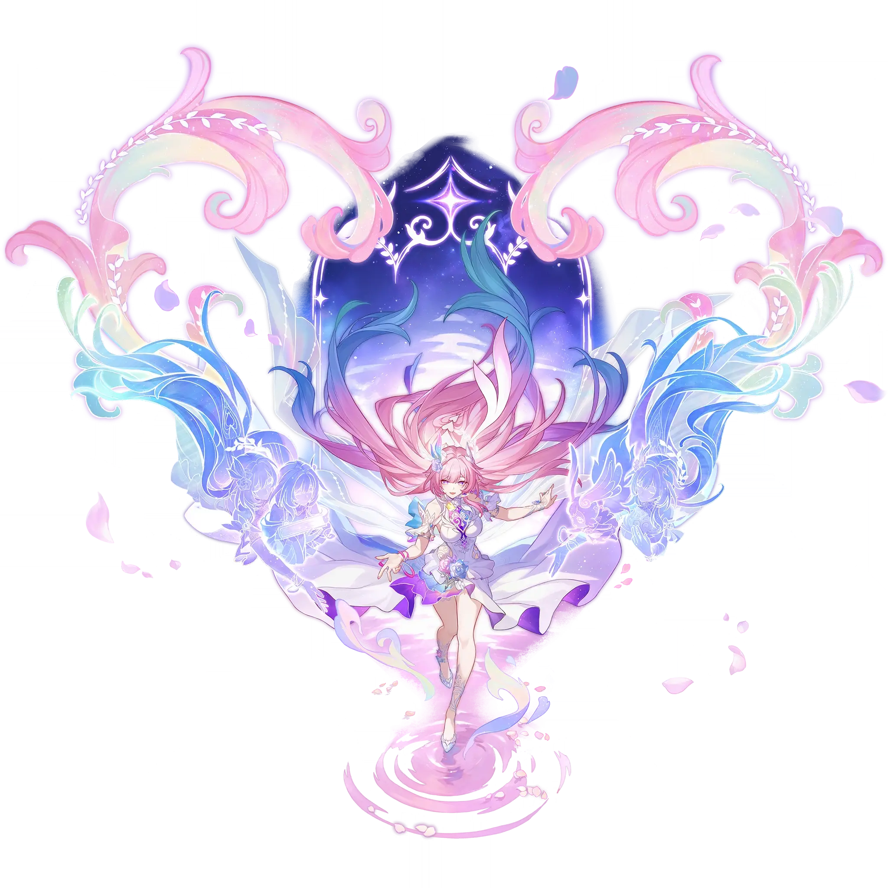

Cyrene
Best Cyrene build guide for Honkai Star Rail. See Cyrene's best Relics, Light Cones, teams, Eidolons, Trace priority, and how to play Cyrene.
🔍 Detail Skill
Semua skill aktif dan pasif beserta efeknya.
Gains 1 "Recollection" point(s) and deals Ice DMG equal to #1[i]% of Cyrene's Max HP to one designated enemy.
Gains 3 "Recollection" points and deals Ice DMG equal to #1[i]% of Cyrene's Max HP to one designated enemy, then deals Ice DMG equal to #1[i]% of Cyrene's Max HP to all enemies. "To Love and Tomorrow ♪" cannot recover Skill Points.
Gains 3 "Recollection" point(s) and deploys a Zone that lasts 2 turns, with the Zone's duration decreasing by 1 at the start of Cyrene's turn. While the Zone is active, for each instance of DMG dealt by all ally targets, deals 1 additional instance of True DMG equal to #1[i]% of the original DMG. When Cyrene is downed, the Zone will also be dispelled.
When combat begins or after Cyrene takes action, other ally characters under any state and their memosprites gain "Future." When ally targets with "Future" take action, they consume "Future" to grant Cyrene 1 "Recollection" point(s). When Cyrene has 24 "Recollection" points, her Ultimate can be activated, and all debuffs on her are dispelled. When she has 12 "Recollection" points while in the "Rip
After the Technique is used, creates a Special Dimension that lasts for 30 second(s) around the character. Enemies within this dimension enters the "This Moment, Forever" state. Increases movement speed for the ally characters within this Special Dimension by 50%. After entering combat within the duration, deploys the Skill's Zone. Only 1 Dimension Effect created by allies can exist at the same ti
Deals Ice DMG to all enemies equal to #1[i]% of ███'s Max HP.
⚔ Light Cone Terbaik
Diurutkan dari yang paling kuat. Persentase menunjukkan performa relatif terhadap pilihan terbaik.
💎 Relic Set Terbaik
Set terbaik untuk karakter ini, diurutkan berdasarkan prioritas.
📊 Stat Utama
Stat yang dicari pada tiap slot.
👥 Tim yang Direkomendasikan
Karakter yang sering dipasangkan bersama Cyrene.
 Hyacine
Hyacine
 Aglaea
Aglaea
 Mydei
Mydei
 Tribbie
Tribbie
 Castorice
Castorice
 Anaxa
Anaxa
🔗 Lanjutkan
Build ini dirangkum dari Prydwen Institute. Starwise tidak menghitung sendiri. Angka bisa berubah setelah patch atau karakter baru rilis.